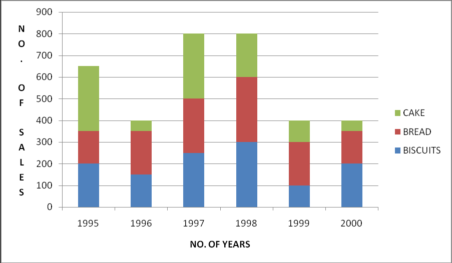

1. Introduction to Quantitative Techniques

These techniques evaluate planning factors of alternatives as and when they arise rather than prescribe courses of action. They are particularly relevant to problems of complex business enterprises.
Classification of Q.T
a) Statistical Techniques
Are those techniques which are used in conducting the statistical inquiry concerning a certain phenomenon? They include statistical methods beginning from the collection of data till the task of interpretation of the data collected.
b) Programming Techniques
Are the model building techniques used by decision maker?
Statistical techniques
- Methods of collecting data
- Classification and tabulation of collected data
- Probability theory and sampling
- Correlation and regression analysis
- Index numbers
- Time series analysis
- Interpretation and extrapolation
- Survey techniques and methodology
- Ratio analysis
- Statistical quality control
- Analysis of variance
- Statistical inference and interpretation
- Theory of attributes
Programming techniques
- Linear programming
- Decision theory
- Theory of games
- Simulation
- a) monte carlo technique
- b) system simulation
- Queuing (waiting line) theory
- Inventory planning
- Network analysis/ PERT
- Integrated production model
- Others:
- Non-linear programming
- The theory of replacement
- Quadratic programming
- Parametric programming
QT and Business management
Production Management
- Selecting building site for a plant, scheduling and controlling its development and designing its layout
- Locating within the plant and controlling movement required materials and finished goods inventories
- Scheduling and sequencing production by adequate preventive maintenance with optimum number of operatives by proper allocation of machines
- Calculating optimum product mix
Personnel Management
- Optimum manpower planning
- No of persons to be maintained on permanent or full time roll
- The no. of persons to be kept in work pool intended for meeting the absenteeism
- Optimum manner of sequencing and routing of personnel to a variety of jobs
- Studying personnel recruiting procedures, accidents rates and labor turnover
Market Management
- Where distribution and warehousing should be located the size, quantity to be stocked and choice of customers
- Optimum allocation of sales budget to direct selling of promotional expenses
- Choice of different media of advertising and bidding strategies
Financial Management
- Finding long range capital requirement as well as how to generate these requirements
- Determining optimum replacement policies
- Working out a profit plan for the firm
- Developing capital investment plans
- Estimating credit and investment risks
Limitation of QTs
- The inherent limitation concerning mathematical expressions
- High costs involved in the use of QTs
- They do not take into consideration the intangible factors i.e. non-measurable human factors
- Quantitative techniques are just the tools of analysis and not the complete decision making process
Role of QT in Business and Industry
1. They provide a tool for scientific analysis
These techniques provides executives with a more precise description of the cause and effect relationship and risks underlying the business operations in measurable terms and this eliminates the conventional intuitive and subjective basis on which management used to formulate their decisions.
2. They provide solution for various business problems
Are used in the field of production, procurement, marketing, finance and other allied fields. Problems like how best can managers and executives allocate available resources to various products so that in a given time the profits are maximized or costs are minimized. Is it possible for an enterprise to arrange the time and quantity of orders of its stocks such that the overall profit with given resources is maximized?
3. They enable proper development of resources
E.g. programmed evaluation and review techniques (PERT) enables us to determine earliest and the latest time for each of the events and activities and thereby helps in the identification of the critical path. All these helps in deployment of resources from one activity to another enable the project completion on time.
4. They help in minimizing waiting and servicing time
The queuing theory helps management in minimizing the total waiting of servicing costs. It also analyses the feasibility of adding facilities and thereby helping to take correct and profitable decision.
5. They enable management to decide when to buy and how much to buy
The main objective of inventory planning is to achieve balance between the costs of holding stock and benefits of holding stock. Helps in determining when to buy and how much to buy.
6. They assist in choosing an optimum strategy
In a competitive situation game theory helps to determine optimum strategy which maximizes profits or minimizes loses but adopting optimum strategy.
7. They render great help in optimum resource allocation
8. They facilitate the process of decision making
9. Through various QTs management can know the reactions of the integrated business systems
Key Points
-
•
Quantitative techniques evaluate planning factors of alternatives as they arise rather than prescribe courses of action.
-
•
Statistical techniques are used for conducting statistical inquiry from data collection to interpretation.
-
•
Programming techniques are model building techniques used by decision makers.